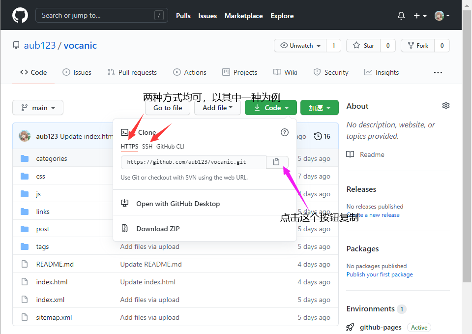

Git 的常用命令
一、已有一个仓库，想把本地项目push到仓库内该这样做：
1.在本地仓库目录的cmd内输入以下命令：
git init进行初始化本地仓库
git add .将已有的项目文件全部添加到缓存区
git commit -m "我是注释"提交已有的项目至仓库内，并在引号内添加注释2.在云端确认自己的仓库，并复制下SSH或者HTTP方式下的网址,以我的博客为例

git remote add origin https://github.com/aub123/vocanic.git
PS:两种方式的区别是SSH密钥将密钥放在GITHUB之后可以不用再次验证，而HTTP方式需要每次提交时进行网页手动验证，或者输入密码验证（注：于2021年某月份后HTTP方式登录不再支持）3.进行本地至云端的提交
git push origin master将代码提交到master分支上
此时登录你的github网页应该已经显示你的提交记录了。
二、从网站克隆（下载）一个仓库，并进行修改
1.在一个你想存放代码的目录，打开 cmd 输入以下命令对代码进行克隆（下载）(仍然以我博客为例)
git clone https://github.com/aub123/vocanic.git
对现有仓库下载
git pull https://github.com/aub123/vocanic.git
更新最新代码状态（直接从远程主机拉取代码并进行merge合并操纵）
git fetch https://github.com/aub123/vocanic.git
抓取远程主机代码但是不进行合并，用于需要检验代码情况后进行更新代码的情况
2.对代码进行修改后，应该这样提交：
git status查看你修改的代码文件状态
git add .将修改的代码添加到缓存区
git commit -m "我是注释"提交到云端并注释
git push origin master提交到分支并完成提交
三、其他一些常见操作
查看分支
git branch -a
创建分支 branch创建并且切换分支git branch -b 分支名字
切换分支git checkout 分支名
删除分支git branch-d 分支名